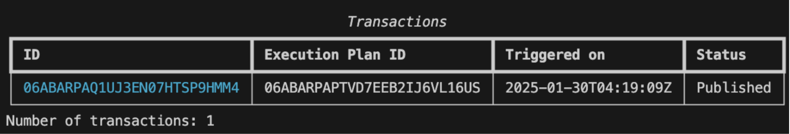
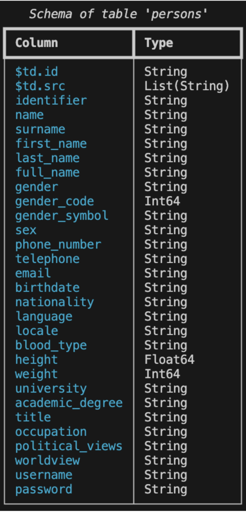
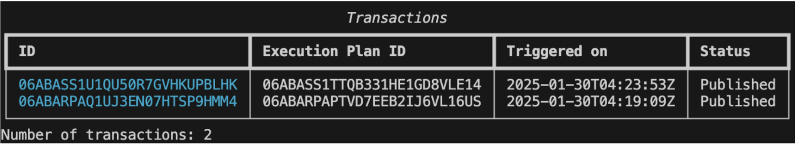
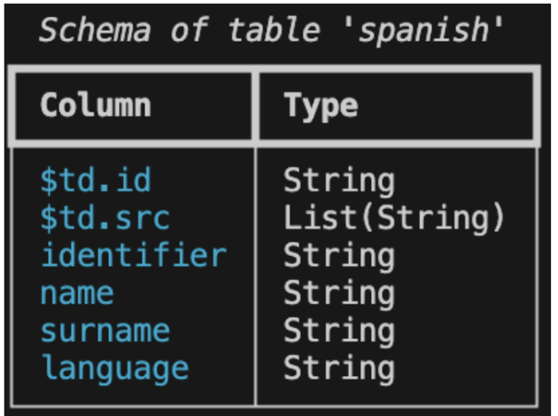

Getting Started#
This chapter provides a tutorial to walk you through essential Tabsdata operations.
In this tutorial, you create a collection to store the Tabsdata functions and tables. Then, you implement a publisher to read the data from an external system and write to Tabsdata, a transformer to modify the data, and a subscriber to read the tables from Tabsdata and write the modified data to an external system.
The tutorial shows you how to define, register, and manually trigger each function. It also demonstrates how easily automated triggering can execute the entire workflow.
If you encounter any trouble with the tutorial, you might find help in Troubleshooting.
Prerequisites#
Before you start the tutorial, complete the following prerequisite tasks:
Install Tabsdata and Start the Server#
While not required, you should install the Tabsdata Python package in a clean virtual environment. You can use python venv, conda or other similar tools to create and manage your virtual environment.
To install Tabsdata, run the following command in your command line interface (CLI):
$ pip install tabsdata
To start the Tabsdata server, use the following command:
$ tdserver start
To verify that the Tabsdata server instance is running:
$ tdserver status
Tutorial Setup#
Use the following steps to prepare for the Tabsdata tutorial:
1. Run the following commands in your CLI from your working directory.
These commands create input and output directories and create the function configuration files for the tutorial. This step is needed only in the context of this tutorial. Yon can choose a different setup for your own projects.
$ mkdir input
$ mkdir output
$ touch publisher.py
$ touch transformer.py
$ touch subscriber.py
$ mkdir input
$ mkdir output
$ echo. > publisher.py
$ echo. > transformer.py
$ echo. > subscriber.py
2. Save your working directory path to a TDX environment variable:
Since Tabsdata operates at the server level, you are required to give a full system path in your Python code when defining input and output for publishers and subscribers. Storing your working directory in an environment variable streamlines that process.
$ export TDX=`pwd`
$ set TDX=%CD%
If you try to register the functions without setting the TDX variable, you will get this error:
Failed to update function: expected str, bytes or os.PathLike object, not NoneType
3. Download the tutorial sample data, persons.csv, from this location <link> to the “input” folder in your working directory.
Step 1. Log in and Create a Collection#
Collections are logical containers for Tabsdata tables and functions. You use collections to enable different business domains to have their own organizational space.
Use the following steps to create a collection for the tutorial.
If you are not logged in, use the following command to log in to Tabsdata:
$ td login localhost --username admin --password password
To create a collection called tutorial, run the following command:
$ td collection create tutorial
Now that you have created a collection, you’re ready to implement a publisher.
Step 2. Implement a Publisher#
Publishers import data from external systems such as local file systems, databases, and cloud storage, and publish the data as tables in the Tabsdata server.
Use the following steps to create a publisher that reads the sample data from local system, register the publisher in the tutorial collection, and manually trigger the publisher to execute.
1. Define the publisher.
In the publisher.py file in your working directory, enter the following code to define a publisher. Remember to save the file after you add the code.
import os
import tabsdata as td
@td.publisher(
source = td.LocalFileSource(os.path.join(os.getenv("TDX"), "input", "persons.csv")),
tables = ["persons"]
)
def pub(persons: td.TableFrame):
return persons
This publisher, named pub, reads the “persons.csv” file in the input folder and writes it to the Tabsdata server as a table called persons.
You can configure publishers to read data from many external systems. For details, Working with Publishers.
2. Register the publisher.
Before you execute a publisher, you need to register it with a collection. Publishers write all of their output tables to the collection that they are registered with.
Use the following command to register your pub publisher with the tutorial collection:
$ td fn register --collection tutorial --fn-path publisher.py::pub --description "tutorial_publisher"
3. Execute the publisher.
Use the following command to manually trigger the publisher to execute:
$ td fn trigger --collection tutorial --name pub
You can use the following command to see if the publisher has finished executing:
$ td exec list-trxs
The command returns transaction data such as the following after the publisher executes:
4. View the new persons Tabsdata table.
To view the schema of the new persons table, run the following command:
$ td table schema --collection tutorial --name persons
The results should look like this:
{kind=link}
To view the data in the table, use the following command:
Now that you have successfully defined, registered, and executed a publisher, you’re ready to do the same for a transformer….
Step 3. Implement a Transformer#
Transformers modify tables inside the Tabsdata server. They can read from one or more Tabsdata tables, transform the data, and write to new Tabsdata tables.
Use the following steps to create a transformer that modifies the tutorial data and writes the results to new tables, register the transformer with the tutorial collection, and manually trigger the transformer to execute.
1. Define a transformer.
In the transformer.py file in your working directory, enter the following code to define a transformer. Remember to save the file after you add the code.
import tabsdata as td
@td.transformer(
input_tables=["persons"],
output_tables=["spanish", "french", "german"]
)
def transf_persons(persons: td.TableFrame):
persons = persons.select(
["identifier", "name", "surname", "nationality", "language"]
)
res = {}
for nationality in ["Spanish", "French", "German"]:
res[nationality] = \
persons.filter(td.col("nationality").eq(nationality)) \
.drop(["nationality"])
return res["Spanish"], res["French"], res["German"]
This transformer, named transf_persons, reads data from the persons Tabsdata table, transforms it, and writes the results to three output tables. The transformer performs the following processing:
Selects specific columns, omitting the other columns from the data
Filters data by nationality
Writes country-specific data to the appropriate table
Since no trigger is explicitly defined, the transformer is triggered by a commit to the specified input table: persons. You can use a trigger_by command to define different trigger tables or to prevent automated triggering. For more information, see Working with Triggers.
You can configure transformers to perform a range of operations. For details, see <hyperlink>.
2. Register the transformer with a Tabsdata collection.
Before you execute a transformer, you need to register it with a collection. Transformers can read data from any Tabsdata collection. And like publishers, they write all of their output tables to the collection that they are registered with.
Use the following command to register the transf_persons transformer with the tutorial collection:
$ td fn register --collection tutorial --fn-path transformer.py::transf_persons --description "tutorial_transformer"
3. Execute the transformer.
Use the trigger command to manually trigger the transformer to execute. The command syntax is the same for all Tabsdata functions:
$ td fn trigger --collection tutorial --name transf_persons
You can use the following command to see if the function has finished executing:
$ td exec list-trxs
The command returns transaction data such as the following after the transformer executes:
Note that the command returns all recent transactions. In this case, both the publisher and transformer are listed.
4. View the output tables.
To view the schema of the spanish output table, run the following command:
$ td table schema --collection tutorial --name spanish
The results should look like this:
{kind=link}
If you like, you can use the command to check the schema for all of the new tables.
Now that you have implemented a transformer, it’s time to work with a subscriber….
Step 4. Implement a Subscriber#
Subscribers export tables from the Tabsdata server to external systems such as local systems, databases, and cloud storage. Use subscribers to provide prepared data to data consumer teams.
Use the following steps to create a subscriber that exports the tutorial tables, register the subscriber with the tutorial collection, and manually trigger the subscriber to execute.
1. Define a subscriber.
In the subscriber.py file in your working directory, enter the following code to define a subscriber. Remember to save the file after you add the code.
import os
import tabsdata as td
@td.subscriber(
["spanish", "french"],
td.LocalFileDestination(
[
os.path.join(os.getenv("TDX"), "output", "spanish.jsonl"),
os.path.join(os.getenv("TDX"), "output", "french.ndjson")
]
)
)
def sub(spanish: td.TableFrame, french: td.TableFrame) -> (td.TableFrame, td.TableFrame):
return spanish, french
This subscriber, named sub, reads data from the spanish and french tables in the Tabsdata server and writes the output files spanish.json1 and french.ndjson to the output folder in the working directory.
Since no trigger is explicitly defined, the subscriber is triggered by a commit to any of the specified input tables: spanish or french. You can use a trigger_by command to define different trigger tables or to prevent automated triggering. <link>
You can configure subscribers to export data to many external systems. For details, see < hyperlink to functions w/list>.
2. Register the subscriber.
Before you execute a subscriber, you need to register it with a collection. Subscribers can read data from any Tabsdata collection.
Use the following command to register the sub subscriber with the tutorial collection:
$ td fn register --collection tutorial --fn-path transformer.py::transf_persons --description "tutorial_transformer"
3. Execute the subscriber.
Use the trigger command to manually trigger the subscriber:
$ td fn trigger --collection tutorial --name sub
To see if the subscriber has finished executing:
$ td exec list-trxs
4. Verify subscriber execution.
You can verify that the spanish.json1 and french.ndjson output files have been created by listing files in the output directory:
$ ls output
You can use your favorite editor to view the contents of the files.
Step 5. Initiate Automated Triggers#
So far, you have used manual triggers to execute the functions in this tutorial.
As mentioned earlier, transformer and subscriber functions have default automated triggers: when a trigger is not explicitly defined, the input tables for the function act as trigger tables. Publishers do not include a default trigger like transformers and subscribers, but you can define them when needed. For more information, see <hyperlink>.<add link to trigger info somewhere in this sentence>
Since the tutorial transformer does not have a specified trigger, it is triggered by a commit to its input table, persons. Similarly, since the tutorial subscriber does not have a specified trigger, it is triggered by a commit to either of its input tables: french or spanish.
So when the tutorial publisher executes, it writes to the persons table and creates a commit to that table. The commit to the persons table automatically triggers the transformer. The transformer processes the data and generates commits to the french and spanish tables. This automatically triggers the subscriber, which exports the data to files in the output directory. As a result, the manual execution of the tutorial publisher results in the automatic processing of the data and the writing of the desired output files.
To see this in action, clear the output folder and test the automated triggers for this tutorial:
1. Remove the existing files from the output directory.
You can do this manually or by running the following command:
$ rm output/*
2. Execute the publisher.
To run the entire tutorial workflow, use the following command to manually trigger the publisher:
$ td fn trigger --collection tutorial --name pub
3. View the list of functions related to the manual trigger of the publisher.
Use the following command to see if the publisher has finished executing:
$ td exec list-trxs
In the list of transactions, the first transaction is the most recent one, the publisher. After the status is published, copy the transaction ID for the first transaction.
Use the copied transaction ID in following command to view the list of functions related to the publisher execution:
$ td exec list-workers --trx <transaction_ID>
<< add screenshot of the results? >>
4. Verify the output.
You can verify that the spanish.json1 and french.ndjson files have been written to the output folder with the following command:
$ ls output
And you can once again check the contents of those files with your favorite editor.
Next Steps#
Congratulations on working with Tabsdata functions and creating an automated workflow!
Here are some suggestions for your next steps:
For a broader understanding of Tabsdata, see <link to key concepts>.
Learn more about defining publishers <link>, transformers <link>, and subscribers <link>.
Dive deeper into the processing that you can do with transformers. <link>
Want to access an external system that does not have built-in support? You can build your own connector plugin. <link>
If you run into problems, check out our troubleshooting chapter. <link>
Wondering about our Tabsdata CLI? Enjoy! << link >>